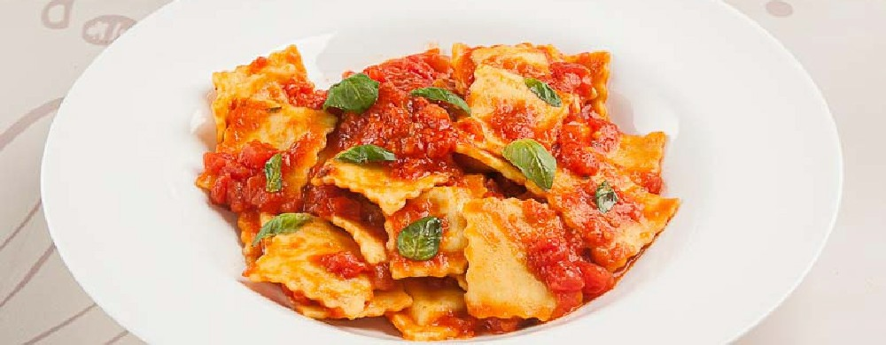

Ravioli Pomodoro

Description
Jazz up store-bought ravioli with a super quick homemade tomato sauce full of fragant onion,
garlic, and basil. The sauce is super versatile and pairs well with any flavor of ravioli,
from cheese to spinach to mushroom.
Ingredients
- 1 can whole peeled tomato
- 1/2 cup olive oil (120 mL)
- 1 small yellow onion, finely chopped
- 3 cloves garlic, minced
- 1/4 teaspoon sugar
- 1 1/2 teaspoons kosher salt
- 1 cup fresh basil leaves (40 g), plus more for garnish
- 1 package store-bought ravioli
-
Add the tomatoes to a food procesor and pulse until smooth.
-
Add the olive oil to a large pan over medium heat. Once the oil begins to shimmer, add
the onion and cook, stirring occasionally, until softened, but not browned, about 5 minutes.
Add the garlic and cook, stirring constantly, until aromatic, about 30 seconds.
-
Add the puréed tomatoes, sugar, and salt and stir to combine. Reduce the heat to medium-low,
cover, and simmer until the sauce is thickened, about 15 minutes. Stir in the basil.
-
Bring a large pot of water to a boil. Cook ravioli according to the package instructions.
Drain through a colander.
-
Add the ravioli to the pomodoro sauce and stir to coat. Garnish with more basil, if desired.
-
Enjoy!